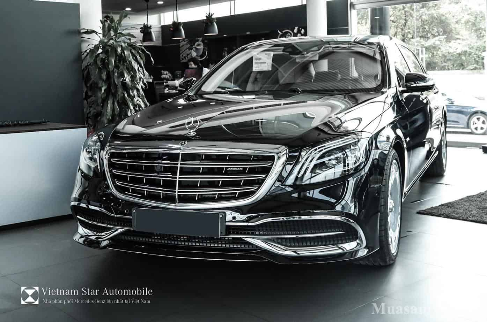
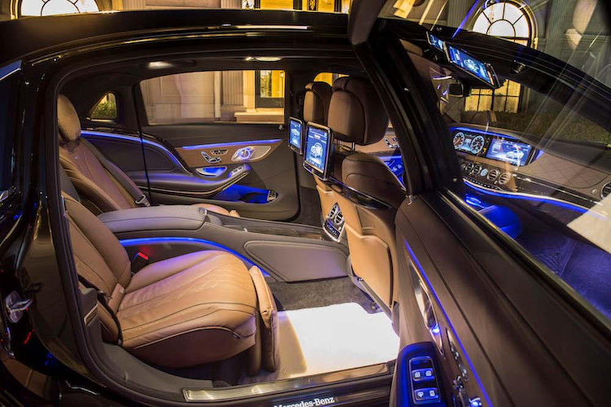
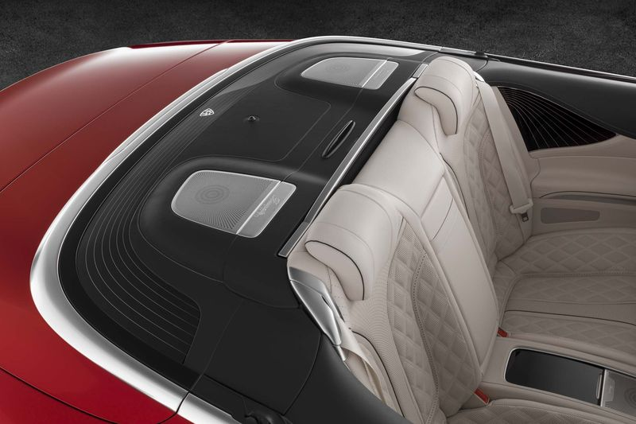
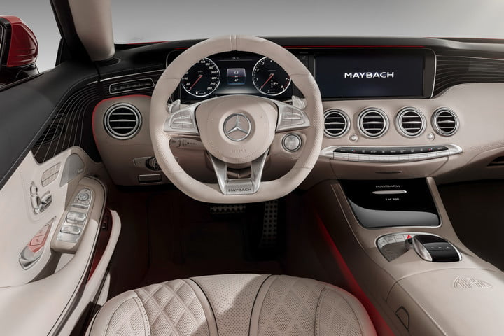
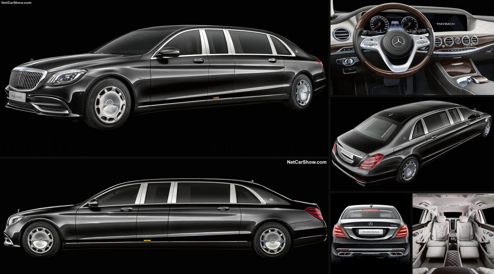

Mercedes Maybach S650 2018
Sự thay đổi của phiên bản Mercedes Maybach S650 2018
Trong năm 2017 này thì thương hiệu Maybach hạng sang nổi tiếng của Daimler này đã vén ra 1 bức màn chi phiên bản giới hạn mang tên gọi chính là Mercedes Maybach S650 này , đây là phiên bản được ra mắt sẽ thay thế cho phiên bản Mercedes Maybach S600 tiền nhiệm trước của nó. Mercedes Maybach S650 được coi là 1 phiên bản cao cấp hạng sang 4 chỗ rất sang trọng đã không hề được kết hợp với bất kỳ mẫu xe nào của thương hiệu xe hơi nước Đức trong nhiều năm qua , có lẽ hãng xe Mercedes này cũng rất sẵn lòng bán ra phiên bản . Rõ ràng phiên bản Mercedes Maybach S650 này không chỉ là 1 phiên bản được thay đổi tên họ hoàn toàn từ phiên bản Maybach S600 mà bởi vì phần thiết kế của chiếc xe này có khoang nội thất cũng hoàn toàn khác . Khách hàng khi sở hữu chiếc xe này có thể đặt hàng với những chất liệu độc quyền dành riêng cho dòng xe này, đây là điều mà các đối thủ cạnh tranh như Rolls-Royce đã làm với phiên bản Dawn, đối thủ tương đương gần nhất của Mercedes Maybach S650 đó nhé.
Thiết kế bên ngoài đẳng cấp riêng biệt của Mercedes Maybach S650 2018
Kích thước tổng thể của Mercedes Maybach S650 2018 cũng khá to lớn với chiều dài x rộng x cao lần lượt là 5453 x 1899 x 1498 (mm), trong khi đó thì chiều dài cơ sở của chiếc xe này cũng đạt mức 3365 (mm) , từ đó sẽ giúp cho không gian nội thất bên trong của chiếc xe này được tăng lên 1 cách đáng kể nhất . Khác với mẫu sedan siêu sang Mercedes-Maybach S600, thì ở phiên bản Mercedes Maybach S650 2018 được thiết kế nhiều tùy chọn mới công nghệ mới. Để tạo sự khác biệt với phiên bản Maybach S600 thì hãng đã phải nâng cấp và cải tiến lại phiên bản Mercedes Maybach S650 2018 mới này đó nhé , sẽ được bổ sung nhiều chi tiết mạ crôm trên thân xe hơn. Trong khi đó ở phần đầu của chiếc xe này lại được hãng cho xuất hiện mặt lưới tản nhiệt có kích thước khá lớn với kiểu dáng 3 thanh nan kép được đặt nằm ngang và các thanh nan dọc mạ chrome tăng thêm sự bắt mắt , mang tính thẩm mỹ cao hơn cho phần đầu chiếc xe này
Thêm vào đó là cản trước Mercedes Maybach S650 2018 sẽ được hãng cho tái thiết kế lại cùng với nẹp chỉ mạ chrome sáng bóng được xuất hiện trên cản trước, cản sau cùng với thân xe, thêm vào đó thì hãng cũng cho trang bị thêm bộ mâm bánh xe hợp kim vành với đường kính 19 inch đồ sộ. Ở ngay phía trên cản trước này cũng có thêm sự xuất hiện của logo Maybach ở hai bên như dấu hiệu nhận biết ra chiếc xe khi đi trên đường đó nhé. Cùng với đó thì hãng cũng bổ sung thêm rất nhiều những màu sơn ngoại thất bên ngoài cho khách hàng có thêm nhu cầu khi lựa chọn sao cho thích hợp với mình nhất , chẳng hạn như : Màu Đen Magnetite (183) hiện đại , màu Đen Obsidian (197) trẻ trung , màu Nâu Peridot (474) nhã nhặn , màu Bạc Iridium (775) cá tính , màu Xám Palladium (792) trung tính , màu Xanh Cavansite (890) phong cách , màu Đen Ruby (897) thanh lịch , màu Bạc Diamond (988) ấn tượng , màu Xanh Anthracite (998) huyền bí , mỗi màu tạo nên 1 vẻ đẹp riêng cho chiếc xe này
Phong cách thiết kế khoang nội thất chiếc xe Mercedes Maybach S650 2018
Khi quý khách hàng mở cửa ra và bước vào bên trong chiếc xe thì người lái có lẽ sẽ không nhận ra đây có phải là chiếc Mercedes Maybach S650 2018 hay là chiếc Maybach S600 đó nhé , nhờ vào bậc cửa lên xuống cùng với sự xuất hiện của logo Maybach được chiếu sáng dù đi vào ban đêm vẫn nhận ra . Theo như hãng xe Mercedes đến từ nước Đức này thì khoang nội thất của phiên bản Mercedes Maybach S650 2018 lại được nhiều người cho liên tưởng đến những chiếc du thuyền hạng sang như Arrow 460 Grantuismo. Thêm vào đó thì ghế ngồi của chiếc xe này cũng được hãng cho bao bọc bằng da cao cấp , êm ái hơn mang phong cách của dòng chảy và được khâu hình quả trám trên xe , cụm đồng hồ của nó cũng có phần khác biệt hơn , thảm sàn dưới chân khá mịn màng , sang trọng cùng với sự xuất hiện của logo Maybach này có mặt ở khắp nơi trên xe từ ghế, sau tựa đầu, vô lăng đến bệ tì tay trung tâm.
  Ngoài ra thì bên trong khoang nội thất của chiếc xe Mercedes Maybach S650 2018 này cũng được hãng cho trang bị thêm cửa sổ trời siêu rộng với kính đổi màu Magic Sky Control vừa tăng thêm sự thoáng mát , hòa mình với thiên nhiên hơn lại có được không gian nghỉ ngơi riêng tư , bên cạnh đó thì hệ thống đèn viền nội thất có thể điều chỉnh 7 màu sắc và độ sáng khác nhau tùy theo từng tâm trạng của người ngồi bên trong . Khoang nội thất của chiếc xe này cũng được hãng cho ốp bằng gỗ designo sunburst myrtle màu nâu bóng (727) hoặc gỗ designo màu đen piano (H21). Khi nhắc tới hệ thống ghế ngồi của chiếc xe này cũng cần phải kể tới chức năng bộ nhớ 3 vị trí cho ghế trước, tay lái và gương chiếu hậu bên ngoài, trong khi đó thì ở hàng ghế phía sau chiếc xe là dạng ghế ngồi thương gia cũng có thể điều chỉnh điện tích hợp bộ nhớ vị trí riêng , phần tựa đầu sang trọng có kích thước lớn hơn , có thể ngả ra phía sau tới 43,5 độ tích hợp thêm đệm đỡ bắp chân chống mỏi khi đi trên đoạn đường dài. Bên cạnh đó thì ghế hành khách phía trước có thể điều chỉnh được từ phía sau cùng phần tựa tay trung tâm được hãng cho ốp gỗ trang trí, có thêm ngăn để đồ và khay để cốc ở xung quanh chiếc xe này rất tiện lợi đó nhé
Kính xe của phiên bản Mercedes Maybach S650 2018 này cũng được hãng cho thiết kế cách âm, cách nhiệt và phản xạ tia hồng ngoại; kính khoang sau màu tối mang tới 1 không gian riêng tư cho các khách hàng có thể nghỉ ngơi 1 cách tốt nhất mà không bị bất kỳ ai quấy rầy. Sự sang trọng còn được hãng cho thể hiện thông qua cổng kết nối truyền thông đa phương tiện phía dưới tựa tay trung tâm, hỗ trợ các thiết bị giải trí di động ngay trên chính chiếc xe này , mang tới 1 không gian sống động nhất như trong chính phòng khách nhà bạn vậy . Còn hàng ghế phía sau cũng có hệ thống giải trí riêng biệt , chức năng tự động điều khiển hệ thống truyền thông đa phương tiện COMAND Online từ phía sau cùng với đó là hệ thống âm thanh vòm mang thương hiệu nổi tiếng Burmester® high-end 3D bao gồm 24 loa xung quanh chiếc xe , công suất 1540 watt cho bạn nghe nhạc ở bất kỳ nơi đâu trên xe tiện lợi hơn phải không nào?
Sự vận hành đỉnh cao của phiên bản Mercedes Maybach S650 2018
Tương tự như ở phiên bản Maybach S600 của nó thì ở phiên bản Mercedes Maybach S650 2018 cũng được trang bị khối động cơ mạnh mẽ V12, tăng áp kép vượt trội nhất và đạt được dung tích 6.0 lít , từ đó sẽ giúp cho chiếc xe này có được hiệu suất hoạt động 1 cách hiệu quả hơn khi hãng cho sản sinh ra được công suất tối đa 390 kW [530 hp] tại 4900 – 5300 vòng/phút và mô-men xoắn cực đại lên tới 830 Nm tại 1900 – 4000 vòng/phút . Nhờ đó thì mẫu xe hạng sang mui trần này có thể tăng tốc trong khoảng thời gian khá ngắn mất 5 giây để đi từ 0-100km/g này nhé trước khi đạt tới tốc độ cực đại 250km/h . Để có được sự vận hành mạnh mẽ trên thì hãng đã phải cho chiếc xe Maybach S650 này kết hợp cùng hộp số tự động 7 cấp độ cùng với hệ dẫn động cầu sau mới làm được những điều trên nhé.
Mercedes Maybach S650 2018 Công nghệ an toàn tiên tiến, hiện đại nhất
Trước tiên phải kể tới việc hãng cho nâng cấp hệ thống treo của chiếc xe Mercedes Maybach S650 2018 này với phong cách Magic Body Control, giúp người lái vận hành mượt mà hơn khi đi trên đoạn đường gồ ghề , tiếp theo cũng cần phải kể tới hệ thống lái Direct-Steer trợ lực điện với trợ lực và tỉ số truyền lái biến thiên theo tốc độ giúp đem lại cảm giác lái tối ưu, hỗ trợ đánh lái thoải mái và chính xác hơn khi đi trên đường, nó còn giúp người lái chỉ cần cầm nhẹ tay lái cũng có thể điều khiển chiếc xe 1 cách nhanh nhẹn và chuẩn xác nhất . Cùng với đó chính là công nghệ đỉnh cao với hệ thống hỗ trợ quan sát ban đêm Night View Assist Plus giúp người lái nhận biết các đối tượng trên đường sớm hơn khi lái xe trời tối, tránh được sự cố va chạm không may xảy ra , bởi nhiều khi người lái không thể quan sát bằng mắt thường được mà phải nhờ tới những hệ thống trên mới biết và quan sát đường đi tối 1 cách rõ nhất . Phanh tay điều khiển điện với chức năng nhả phanh thông minh sẽ giúp ích khá nhiều cho người lái nếu như gặp sự cố va chạm xảy ra mà không thể xử lý kịp thời tình huống này , sự xuất hiện thêm của đèn phanh Adaptive nhấp nháy khi phanh gấp cũng giúp cho những chiếc xe đi phía sau nắm bắt được hành vi của người lái 1 cách dễ dàng nhất.